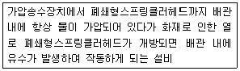

소방공무원(공개,경력)-소방학개론 (2015-04-18 기출문제)
1. 오존층 파괴지수(O.D.P)가 제일 큰 것은?
- 할론 1301
- 할론 1211
- 할론 2402
- 이산화탄소
(정답률: 80%)

2. 아세톤과 휘발유는 어디에 해당하는가?
- 제1석유류
- 제2석유류
- 제3석유류
- 제4석유류
(정답률: 79%)
3. 소방력 3요소가 아닌 것은?
- 소방인력
- 장비
- 소방설비
- 물
(정답률: 71%)
4. 다음 중 목재건축물 화재 진행 과정을 순서대로 나열한 것은?
- 발화 -발염착화 - 무염착화 - 최성기
- 무염착화 - 발염착화 - 발화 - 최성기
- 발염착화 - 무염착화 - 최성기 -발화
- 발화 - 무염착화 - 발염착화 – 최성기
(정답률: 80%)
5. 다음에 해당하는 스프링클러설비는?

- 습식 스프링클러설비
- 건식 스프링클러설비
- 준비작동식 스프링클러설비
- 일제 살수식 스프링클러설비
(정답률: 75%)
6. 자동화재탐지설비에 대한 설명 중 옳지 않은 것은?
- 수신기는 화재시 발신기 또는 감지기로부터 신호를 직접 또는 중계기를 거쳐 수신하여 건물 관계자에게 표시 및 음향장치로 알려주는 설비이며 P형은 고유신호로 수신하고 R형은 공통 신호로 수신한다.
- 발신기는 화재발생신고를 수신기 또는 중계기에 수동으로 발신하는 것을 말한다.
- 경계구역이란 소방대상물 중 화재신호를 발신하고 그 신호를 수신 및 유효하게 제어할 수 있는 구역을 말한다.
- 자동화재 탐지설비는 화재발생을 자동으로 감지하여 해당 소방대상물의 관계자에게 통보하는 설비로 자동화재 속보설비와 연동하여 작동할 수 있다.
(정답률: 65%)
7. 다음 중 재난에 대한 예방, 대비, 대응 및 복구 중에 종류가 다른 하나는?(오류 신고가 접수된 문제입니다. 반드시 정답과 해설을 확인하시기 바랍니다.)
- 재난 유형별 사전교육 및 훈련 실시
- 비상방송 시스템구축
- 재난 취약 시설 점검
- 자원 관리 체계 구축
(정답률: 43%)
8. 다음 중 소방에서 행하는 기능이 아닌 것은?
- 주유취급소 시설에 대한 설치허가
- 화재경계지구 안의 대상물의 위치, 구조 및 설비 등에 대한 특별 조사
- 특정소방대상물에 대한 건축허가
- 이상기상 특보시 화재경계발령
(정답률: 49%)
9. 다음 중 화재피해조사로 옳지 않은 것은?
- 화재로 인한 사망자 및 부상자
- 연소 상황 조사
- 열에 의한 파손, 탄화, 융용등의 피해
- 소화활동 중 사용된 물로 인한 피해
(정답률: 73%)
10. 다음 중 기상폭발이 아닌 것은?
- 분무폭발
- 분진폭발
- 분해폭발
- 증기폭발
(정답률: 70%)
11. 유류화재에 물을 무상으로 방사하여 소화하려고한다. 주로 어떤 소화 원리에의해 소화 되는가?
- 냉각소화
- 희석소화
- 질식소화
- 제거소화
(정답률: 67%)
12. 감광계수가 0.3 이며 가시거리는5m 일 때 맞는 상황은?
- 어두침침한 것을 느낄 정도의 농도
- 연기감지기가 작동할 정도
- 건물 내부에 익숙한 사람이 피난할 때 약간 지장을 느낄 정도
- 화재 최성기때의 농도로 유도등이 보이지 않을 경우
(정답률: 72%)
13. 기름탱크 1/2이하 충전되어 있고 화재 진압시 증기 압력으로 탱크가 파열되었다 다음은 무슨 현상인가?
- 슬롭오버
- 보일오버
- 오일오버
- 플래비현상
(정답률: 63%)
14. 가연성 증기가 공기와 혼합하여 기체를 형성하였을 때 연소범위가 가장 넓은 물질은?
- 수소
- 이황화탄소
- 부탄
- 아세틸렌
(정답률: 72%)
15. 소방활동 설비에 속하지 않는 것은?
- 제연설비
- 무선통신보조설비
- 연소방지
- 비상방송
(정답률: 77%)
16. 다음 중 물이 소화약제로 사용되는 경우의 장점으로 옳은 것은?
- 증발잠열이 커 냉각효과가 크다
- 압력을 가하면 압축이 가능하다
- 경제적이고 초기소화에 적합하다
- 동절기에 동결될 우려가 적다.
(정답률: 80%)
17. 소방의 역사로 옳지 않은 것은?
- 1426년 세종8년에 금화도감 설치
- 1925년 최초 소방서 경성소방서 설치됨과 동시에 소방법 제정
- 1972년 서울과 부산 이원적 소방행정체제가 시행되었다.
- 2004년 재난 및 안전관리기본법을 공포하였다.
(정답률: 74%)
18. 다음 중 정전기 방지를 위한 예방대책으로 옳지 않은 것은?
- 정전기 발생이 우려되는 장소에 접지시설 설치
- 공기를 이온화하여 정전기 발생을 예방
- 공기의 상대습도를 70% 이상으로 한다.
- 전기의 저항이 큰 물질은 대전이 용이하므로 부도체 물질을 사용
(정답률: 80%)
19. 병원으로 이송을 위한 환자의 중증도를 분류가 옳지 않은 것을 고르시오.
- 사망 또는 생존의 가능성이 없는 환자-지연환자-흰색
- 수시간 이내 응급처치를 요하는 환자-응급환자-황색
- 수시간,수일 후 치료해도 생명에 지장이 없는 환자-비응급환자-녹색
- 수분,수시간이내 응급처치를 요구하는 단계-긴급환자-적색
(정답률: 75%)
20. 고체연소 중 맞는 것은?
- 목재,나프탈렌,금속분-증발연소
- 황,니트로글리세린-자기연소
- 목재,섬유,플라스틱-분해연소
- 금속분,파라핀-표면연소
(정답률: 51%)